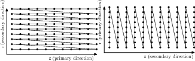
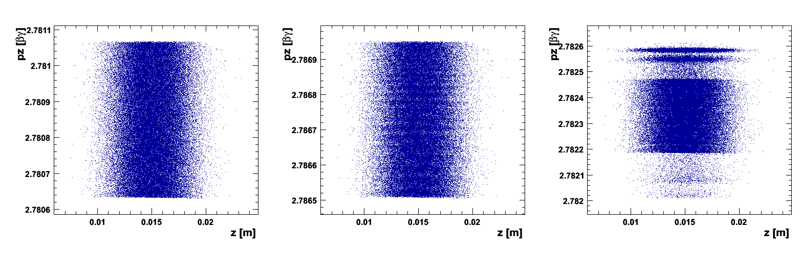
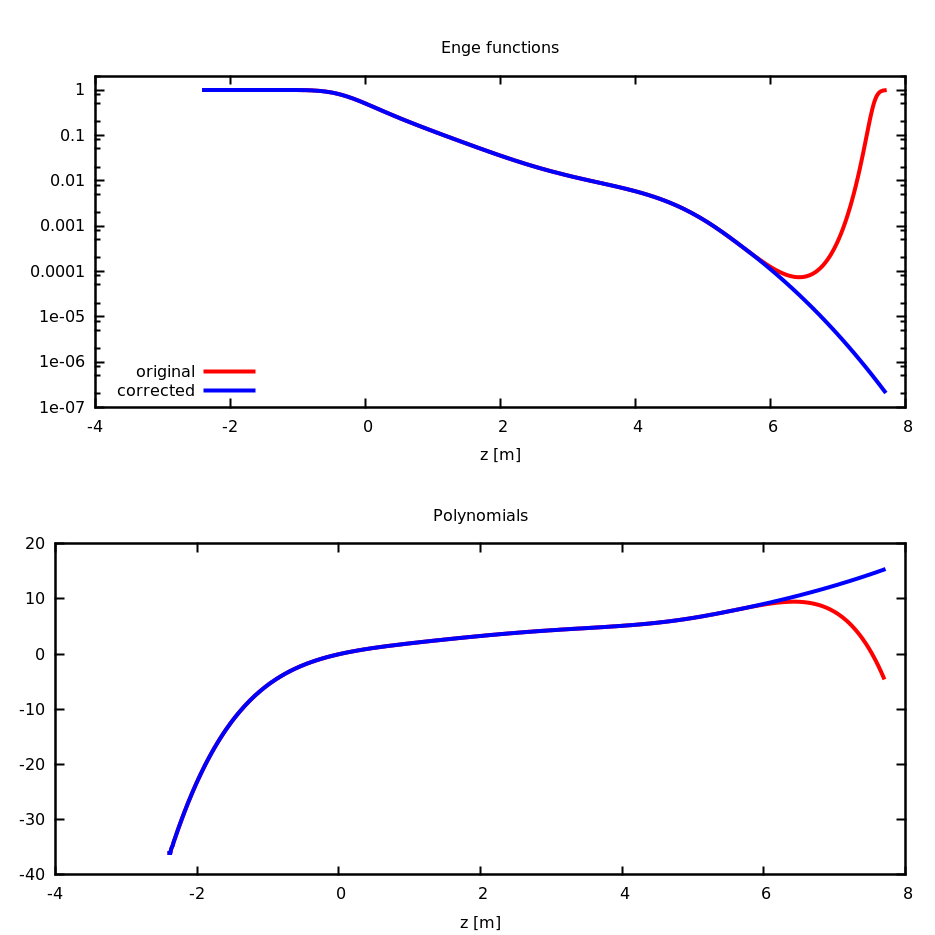
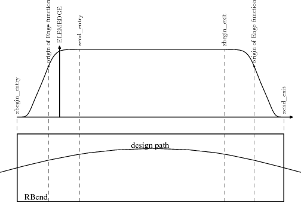
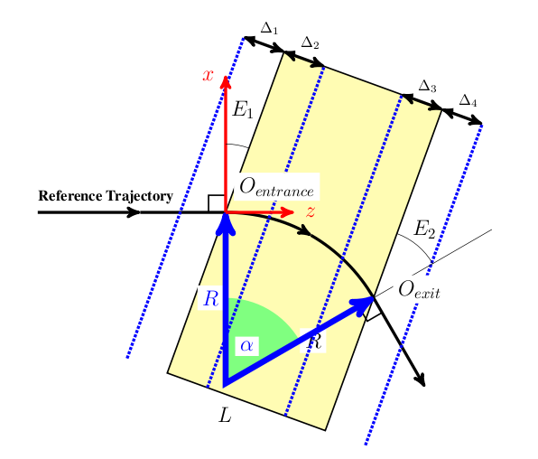
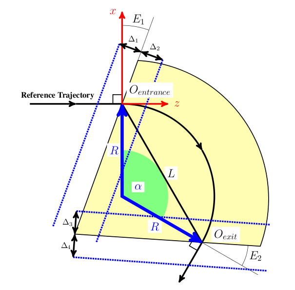

Appendix A — OPAL-T Field Maps
A.1 Introduction
This appendix documents the field-map types accepted by OPAL-T. The legacy implementation supports several one-, two-, and three-dimensional field-map formats that originated from different external codes and accelerator applications.
The original manual groups them into three families:
- 2D and 3D sampled field maps with interpolation on a grid
- 1D on-axis profiles reconstructed off axis from a truncated Fourier series
- Enge-function fringe-field models for selected bend magnets
In all cases, electric maps are normalized to a peak on-axis longitudinal field of 1 MV/m and magnetic maps to a peak on-axis longitudinal field of 1 T, unless the map type is explicitly documented as an exception.
A.3 Normalization
ASCII field maps are normalized with the maximum absolute value of the longitudinal on-axis field. The documented exception is 1DProfile1. This normalization can be disabled by appending FALSE to the first line of the field map.
A.4 Field-Map Warnings and Errors
If OPAL-T encounters a parsing error, it disables the corresponding element, emits a warning, and continues the simulation. The main warning categories are:
- too few lines compared with the header counts
- too many lines compared with the header counts
- wrong number or type of values on a given line
- file not found
- unrecognized field-map descriptor
- too few Fourier coefficients for a 1D field reconstruction
For one-dimensional maps the reconstruction quality is checked with the legacy criteria
\[ \frac{\sum_{i=1}^N (F_{z,i} - \tilde F_{z,i})^2}{\sum_{i=1}^N F_{z,i}^2} \le 10^{-2}, \tag{A.1}\]
and
\[ \frac{\max_i |F_{z,i} - \tilde F_{z,i}|}{\max_i |F_{z,i}|} \le 10^{-2}, \tag{A.2}\]
where F_z is the sampled field from the file and \tilde F_z is the field reconstructed after low-pass filtering.
A.5 Types and Format
The legacy appendix lists both implemented and planned descriptors.
A.5.1 Implemented families
| Type | Meaning |
|---|---|
1DMagnetoStatic |
one-dimensional static magnetic field |
AstraMagnetoStatic |
ASTRA magnetic field format with non-equidistant sampling |
1DDynamic |
one-dimensional time-dependent RF field |
AstraDynamic |
ASTRA dynamic field format |
1DProfile1 |
Enge-like bend fringe profile |
2DElectroStatic |
two-dimensional electrostatic field |
2DMagnetoStatic |
two-dimensional static magnetic field |
2DDynamic |
two-dimensional dynamic field |
3DMagnetoStatic |
three-dimensional static magnetic field |
3DMagnetoStatic_Extended |
mid-plane magnetic field extended to 3D |
3DDynamic |
three-dimensional dynamic field |
A.5.2 Planned but not implemented in the historical appendix
| Type | Note |
|---|---|
1DElectroStatic |
not implemented; old workaround was 1DDynamic with very low frequency |
3DElectroStatic |
not implemented |
A.6 Field-Map Orientation
Two- and three-dimensional maps carry an orientation string in the header.
For 2D maps:
XZ: primary direction inz, secondary inrZX: primary direction inr, secondary inz
For 3D maps:
XYZ: primary direction inz, secondary iny, tertiary inx
The primary index increases fastest and the tertiary index slowest. Accordingly, the first field component column corresponds to the primary axis-order interpretation. For 2D dynamic maps in XZ orientation the four data columns are:
EzEr|E|(unused by the legacy code)Hphi
In the alternative 2D orientation, the first two columns are interchanged while the third and fourth are unchanged.

A.7 FAST Attribute for 1D Field Maps
For some 1D field maps, the boolean attribute FAST can be used to speed up field evaluation. When FAST = TRUE, OPAL-T generates an internal 2D field map and then uses bilinear interpolation rather than the slower Fourier-series technique.
This is faster, but the legacy appendix warns that it can introduce numerical noise if the generated 2D grid is too coarse.

A.8 1DMagnetoStatic
A 1DMagnetoStatic map stores one-dimensional static magnetic data on axis. An example header from the appendix is:
1DMagnetoStatic 40
-60.0 60.0 9999
0.0 2.0 199This describes a map with 10000 longitudinal points (9999 spacings) from -60 cm to 60 cm relative to ELEMEDGE. The field is normalized so that max(|B_on axis|) = 1 T. The code computes Nz/2 complex Fourier coefficients and retains only N_Fourier during tracking.
If FAST = TRUE, the third line defines the radial range of an internally generated 2D map. In the example, that is 0 cm to 2 cm with 200 radial values.
| Line | Contents |
|---|---|
| 1 | 1DMagnetoStatic N_Fourier [TRUE|FALSE] |
| 2 | z_start z_end Nz in cm |
| 3 | r_start r_end Nr in cm |
| remaining lines | Bz samples in tesla |
A.9 AstraMagnetoStatic
This format accepts non-equidistant longitudinal samples in meters. The first column is z, the second is the on-axis longitudinal magnetic field. OPAL-T uses cubic-spline interpolation to resample the data to an equidistant mesh, then computes Fourier coefficients from that internal mesh.
| Line | Contents |
|---|---|
| 1 | AstraMagnetoStatic N_Fourier [TRUE|FALSE] |
| remaining lines | z_i [m], Bz_i [T] |
The appendix explicitly notes that AstraMagnetoStatic does not provide a FAST path.
A.10 1DDynamic
A 1DDynamic map is the RF analogue of 1DMagnetoStatic. An example header is:
1DDynamic 40
-3.0 57.0 4999
1498.953425154
0.0 2.0 199The field is sampled on axis, normalized so that max(|E_on axis|) = 1 MV/m, and evaluated at runtime with the time factor cos(omega t + phi).
| Line | Contents |
|---|---|
| 1 | 1DDynamic N_Fourier [TRUE|FALSE] |
| 2 | z_start z_end Nz in cm |
| 3 | frequency in MHz |
| 4 | r_start r_end Nr in cm for the optional FAST path |
| remaining lines | Ez samples in MV/m |
A.11 AstraDynamic
AstraDynamic accepts a frequency line followed by non-equidistant z and Ez samples in meters and MV/m. OPAL-T spline-resamples the data to an internal equidistant mesh before the Fourier reconstruction.
| Line | Contents |
|---|---|
| 1 | AstraDynamic N_Fourier [TRUE|FALSE] |
| 2 | frequency in MHz |
| remaining lines | z_i [m], Ez_i [MV/m] |
The appendix again notes that there is no FAST variant.
A.12 1DProfile1
1DProfile1 is the special bend-fringe profile format. It uses Enge functions for the entrance and exit fringe fields,
\[ F(z) = \frac{1}{1 + e^{\sum_{n=0}^{N_{\mathrm{order}}} c_n (z/D)^n}}, \tag{A.3}\]
where D is the full gap of the magnet and c_n are fitted coefficients. Unlike the other ASCII formats, 1DProfile1 is not normalized to unit peak field.
The appendix warns that the polynomial degree should be odd and the highest coefficient should be positive, otherwise the fitted profile may turn upward again at large distance.

1DProfile1.

1DProfile1.
The generic file layout is:
| Line | Contents |
|---|---|
| 1 | 1DProfile1 N_Enge_Entrance N_Enge_Exit Gap |
| 2 | three entrance parameters plus a placeholder |
| 3 | three exit parameters plus a placeholder |
| following lines | entrance coefficients c_0 ... c_N then exit coefficients |
A.12.1 1DProfile1 Type 1
Type 1 stores the magnet length implicitly in the difference between the second exit and entrance parameters. The appendix defines
\[ \begin{aligned} \text{Entrance Parameter 1} &= \text{Entrance Parameter 2} - \Delta_1 \\ \text{Entrance Parameter 3} &= \text{Entrance Parameter 2} + \Delta_2 \\ \text{Exit Parameter 2} &= L - \text{Entrance Parameter 2} \\ \text{Exit Parameter 1} &= \text{Exit Parameter 2} - \Delta_3 \\ \text{Exit Parameter 3} &= \text{Exit Parameter 2} + \Delta_4 \end{aligned} \tag{A.4}\]
and recovers internally
\[ \begin{aligned} L &= \text{Exit Parameter 2} - \text{Entrance Parameter 2} \\ \Delta_1 &= \text{Entrance Parameter 2} - \text{Entrance Parameter 1} \\ \Delta_2 &= \text{Entrance Parameter 3} - \text{Entrance Parameter 2} \\ \Delta_3 &= \text{Exit Parameter 2} - \text{Exit Parameter 1} \\ \Delta_4 &= \text{Exit Parameter 3} - \text{Exit Parameter 2}. \end{aligned} \tag{A.5}\]

RBEND profile geometry for 1DProfile1 type 1.

SBEND profile geometry for 1DProfile1 type 1.
A.12.2 1DProfile1 Type 2
Type 2 removes the magnet-length information from the field map and uses the beamline element attribute L instead. This allows the Enge origins to move relative to the physical edges.
\[ \begin{aligned} \text{Entrance Parameter 2} &= \text{perpendicular distance of the entrance Enge origin from the entrance edge}, \\ \text{Exit Parameter 2} &= \text{perpendicular distance of the exit Enge origin from the exit edge}. \end{aligned} \tag{A.6}\]
The remaining deltas are still recovered from the parameter differences. The two main advantages noted in the appendix are:
- the Enge origins can be adjusted to model the fringe more accurately
- one map can be reused for magnets with identical fringe fields but different lengths
A.13 Two-Dimensional Families
A.13.1 2DElectroStatic
Example header:
2DElectroStatic XZ
-3.0 51.0 4999
0.0 2.0 199
0.00000e+00 0.00000e+00
4.36222e-06 0.00000e+00
...This format describes a sampled electrostatic field with bilinear interpolation. In the source example the map spans 5000 longitudinal points and 200 radial points. The field is non-negligible from -3.0 cm to 51.0 cm relative to ELEMEDGE, and the radial support is 0.0 cm to 2.0 cm. In XZ orientation the first column is Ez and the second is Er; for ZX orientation the columns are exchanged.
| Line | Contents |
|---|---|
| 1 | 2DElectroStatic Orientation [TRUE|FALSE] |
| 2 | fastest-changing axis extent and spacing count |
| 3 | slowest-changing axis extent and spacing count |
| remaining lines | (Ez, Er) for XZ, (Er, Ez) for ZX |
A.13.2 2DMagnetoStatic
Example header:
2DMagnetoStatic ZX
0.0 2.0 199
-3.0 51.0 4999
0.00000e+00 0.00000e+00
0.00000e+00 4.36222e-06
...This is the magnetostatic analogue of 2DElectroStatic. The field is normalized so that max(|Bz on axis|) = 1 T. In the source example the orientation is ZX, so the fastest-changing index is radial and the stored pair is (Br, Bz) rather than (Bz, Br).
| Line | Contents |
|---|---|
| 1 | 2DMagnetoStatic Orientation [TRUE|FALSE] |
| 2 | fastest-changing axis extent and spacing count |
| 3 | slowest-changing axis extent and spacing count |
| remaining lines | (Bz, Br) for XZ, (Br, Bz) for ZX |
A.13.3 2DDynamic
Example header:
2DDynamic XZ
-3.0 51.0 4121
1498.953425154
0.0 1.0 75
0.00000e+00 0.00000e+00 0.00000e+00 0.00000e+00
...This is the two-dimensional RF format. It adds a frequency line and stores four values per grid point:
EzEr|E|(present but unused byOPAL-T)Hphi
The first two columns follow the XZ / ZX orientation rule, while the third and fourth do not.
| Line | Contents |
|---|---|
| 1 | 2DDynamic Orientation [TRUE|FALSE] |
| 2 | fastest-changing axis extent and spacing count |
| 3 | frequency in MHz |
| 4 | slowest-changing axis extent and spacing count |
| remaining lines | Ez/Er, Er/Ez, |E|, Hphi |
A.14 Three-Dimensional Families
A.14.1 3DMagnetoStatic
Example header:
3DMagnetoStatic
-1.5 1.5 227
-1.0 1.0 151
-3.0 51.0 4121
0.00e+00 0.00e+00 0.00e+00
...The plain 3D magnetostatic format stores full sampled vector-field data on a Cartesian grid and uses trilinear interpolation. The legacy ordering is z fastest, then y, then x. The data columns are Bx, By, and Bz.
| Line | Contents |
|---|---|
| 1 | 3DMagnetoStatic [TRUE|FALSE] |
| 2 | x_start x_end Nx in cm |
| 3 | y_start y_end Ny in cm |
| 4 | z_start z_end Nz in cm |
| remaining lines | Bx By Bz |
A.14.2 3DMagnetoStatic_Extended
Example header:
3DMagnetoStatic_Extended
-9.9254 9.9254 133
-2.0 1.0 15
-22.425 47.425 465
-8.10970000e-05
...This format stores only a mid-plane magnetic map and reconstructs the 3D field using Maxwell consistency and a perfect-magnetic-conductor mid-plane symmetry. The stored quantity is the perpendicular field component on the mid-plane, and the upper half-plane is mirrored to negative y.
| Line | Contents |
|---|---|
| 1 | 3DMagnetoStatic_Extended [TRUE|FALSE] |
| 2 | x_start x_end Nx in cm |
| 3 | y_start y_end Ny in cm |
| 4 | z_start z_end Nz in cm |
| remaining lines | stored mid-plane By values |
A.14.3 3DDynamic
Example header:
3DDynamic
1498.9534
-1.5 1.5 227
-1.0 1.0 151
-3.0 51.0 4121
0.00e+00 0.00e+00 0.00e+00 0.00e+00 0.00e+00 0.00e+00
...The dynamic 3D format adds a frequency specification and then stores six field components per sample:
ExEyEzHxHyHz
The grid ordering is again z fastest, then y, then x.
| Line | Contents |
|---|---|
| 1 | 3DDynamic [TRUE|FALSE] |
| 2 | frequency in MHz |
| 3 | x_start x_end Nx in cm |
| 4 | y_start y_end Ny in cm |
| 5 | z_start z_end Nz in cm |
| remaining lines | Ex Ey Ez Hx Hy Hz |
A.15 References
- J. E. Spencer and H. A. Enge, Split-pole magnetic spectrograph for precision nuclear spectroscopy, Nucl. Instrum. Methods 49, 181 (1967).
- J. H. Billen and L. M. Young, Poisson superfish, Los Alamos report LA-UR-96-1834 (2004).
A.2 Comments in Field Maps
Comments are introduced by
#and extend to the end of the line. They are accepted:They must not split a record that is expected to stay on one line. A valid example is:
A broken example is: